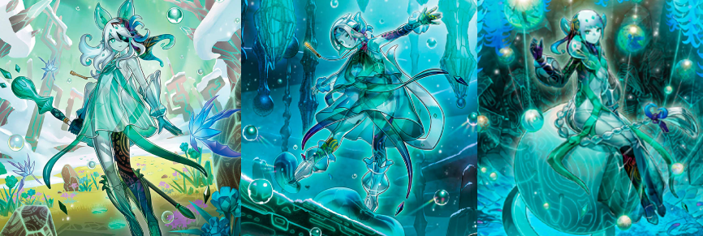
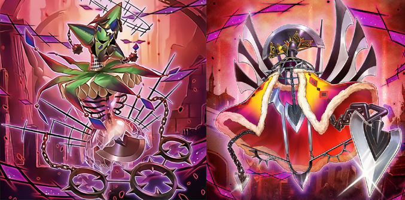
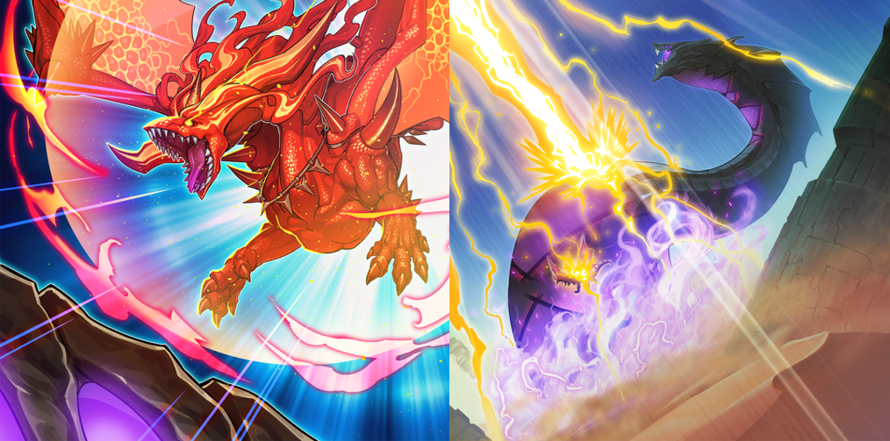

Fleudelis hears of Ecclesia's exile and has a foreboding premonition of Maximus and the Dogmatika. Suspecting that Maximus may have ulterior motives, she defects along with Adin and Theo. The three leave the Dogmatika Nation and head toward a distant place where they can have their Stigmata sealed.
Concealed within a dense mist at the peak of Mount Swordsoul, the Enion Cradle is a living reservoir of magical water from which the Icejade receive their life force. The Enion Cradle manifests itself in the form of the first Icejade, Kosmochlor, who in turn creates the other Icejade. As they expend their life force, the Icejade's bodies are slowly overtaken by a black color. Upon depleting their energy, the Icejade's spirits return to the Enion Cradle while their bodies shatter into a crystalline material.

Fleurdelis, Adin, and Theo arrive at Mount Swordsoul and encounter Chixiao, Mo Ye, and Taia. They are brought to the Enion Cradle and have their Stigmata sealed by the Icejade.
Back at the Dogmatika Nation, Maximus bestows a Stigmata upon a girl with red hair — the 666th Saint.
"Maximus" looked up to the firmament in the sacred land of the "Dogmatika Nation". He finally moved towards carrying out his long-desired ritual. It consisted of a forbidden technique to awaken the 'brands' that his countrymen bore, which they happily boasted of as 'stigmata', in order to make dark powers erupt from the opened 'Hole'. As "Maximus" slowly opened his crossed arms, a wave was unleashed from the 'Hole' in the skies that engulfed the entire nation like a massive maw. In a mere instant, the civilians, the soldiers, the entire nation altogether was transfigured into "Despias", actors of tragedy.
The 'stigmata' that "Maximus" bestowed upon his countrymen were concealed 'brands' for them to host until the Day of Gospel. The 'brands' engraved in their bodies opened after the ritual, and became 'Holes'.
The only thing left clinging to the holy relics were the cursed souls of the Virtuous Vestals. They took a sinister shape as a result of the ritual.

The White Knight — corrupted version of Fleurdelis's previous armor — becomes Quaeritis in the process.
As a result of the ritual, the land known as "Dogmatika" was shattered, and from its foundations a sinister, massive object shaped like a castle surfaced. And so, from the form of "White Knight of Dogmatika" taken by the holy relic, a beautiful yet terrifying monster crept out. Shivering with delight, "Maximus" absorbed the power of darkness onto himself and became "Dramaturge". Finally, the frontlines where "Shuraig" and his allies fought to the death against the 'Knights of Holy Teachings' collapsed under the frenetic attack from the "Despians".
Another figure emerges from the Hole and watches the carnage from afar with amusement. It is Aluber, a masked boy with red hair and pale skin who seems to relish the events unfolding.
Adorned with red orbs identical to Albaz's white orbs, Aluber demonstrates that he, too, has the ability to transform into dragons. He becomes Masquerade the Blazing Dragon and flies off to seek Albaz with motives unknown.
As a result of the ritual, an unprecedentedly-massive 'Hole' was opened and the energy released from it reached even the distant "Great Sand Sea". Then, the ruler of the "Great Sand Sea" that feeds on 'Holes' and hosts them in its body, "Supreme Sovereign Serpent of Golgonda", rampaged as a result of the influence of this energy.
>Furthermore, whether by chance or necessity, the boy caught in the aftereffects of the wave transformed into the red-hot dragon "Albion", engaging in a rampage, dragging in even his allies.
Amidst the predicament of "Ecclesia", a single thunderclap roared as if tearing the heavens apart, knocking out "Golgonda". The ones appearing in front of the cheering "Springans" were none other than the former Knights of Holy Teachings "Theo" and "Adin", as well as the former virtuous "Fleurdelis". Sensing the secret intentions of "Maximus" and under persistent attacks from the religious disciples that caused them to sustain heavy wounds, they found a method to seal their 'stigmata' and came rushing in to the rescue.

After "Albion" knocked out "Golgonda" and kept rampaging, "Ecclesia" faced him and slowly walked towards him, step by step. There was no trepidation in her heart, only feelings of trust in the boy that stood in front of her. By hearing the name "Ecclesia" gave him being called, "Albaz" regained himself. The many memories obtained through this long journey solidified the bonds between the two of them. He regained consciousness by the power of bonds
"Fleurdelis" informed them of the crimes of "Maximus", and about returning to their homeland of "Dogmatika" to stop him. On the other hand, "Albaz" and "Ecclesia" learned that the 'stigmata' were cursed 'brands' and resolved to take on a new trip in order to seal the 'brands'. They headed to the sacred summit where the people who helped "Fleurdelis" and the others awaited for them.
The pair takes flight, taking with them the new equipment provided by "Kitt" and the Hammer Rockey containing the feelings of the "Springans".